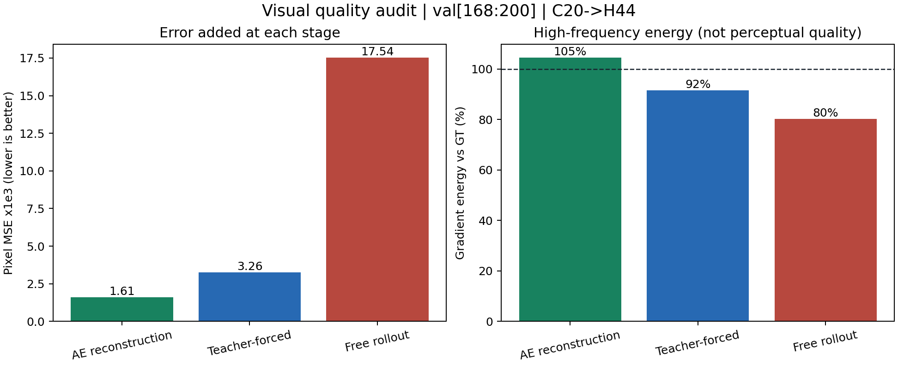
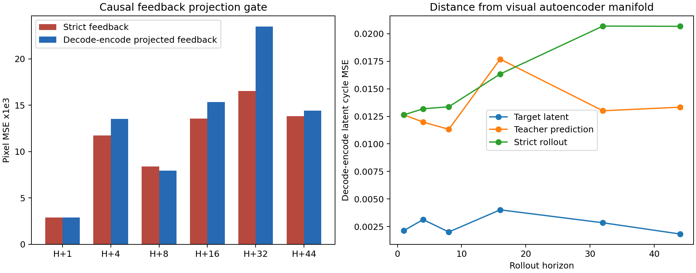
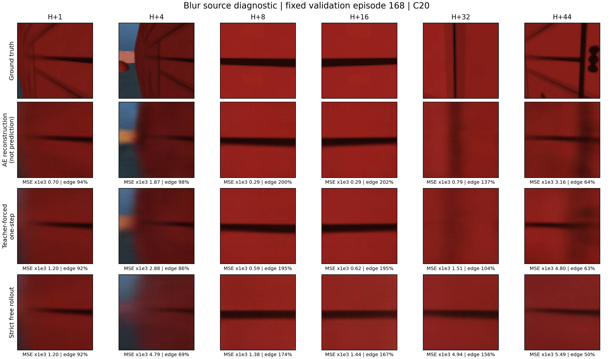
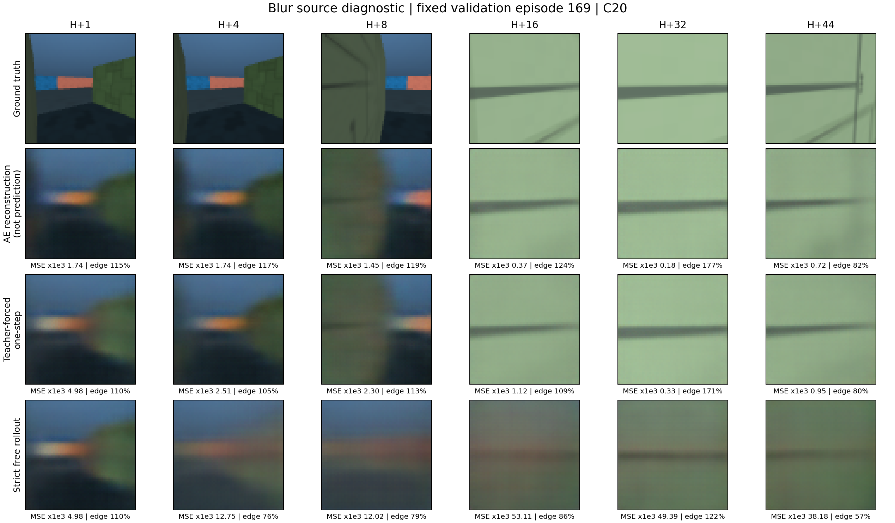
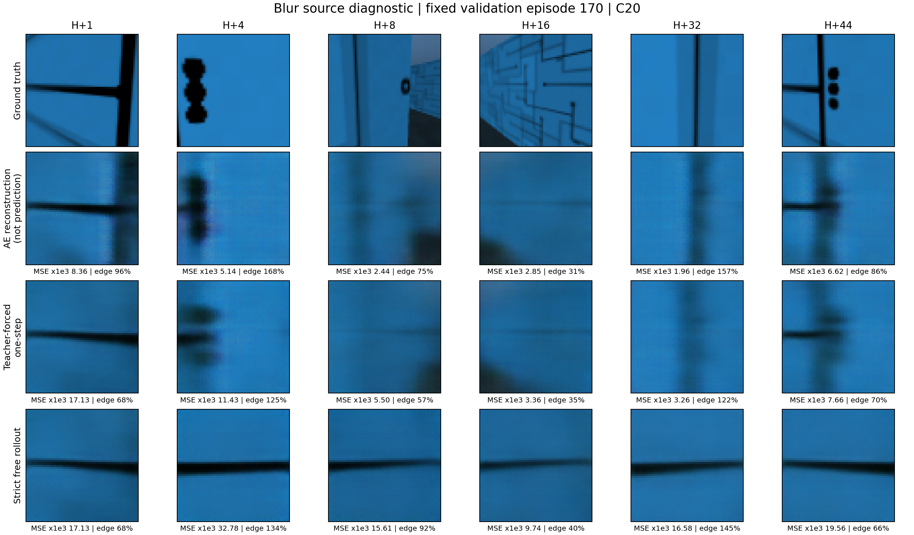
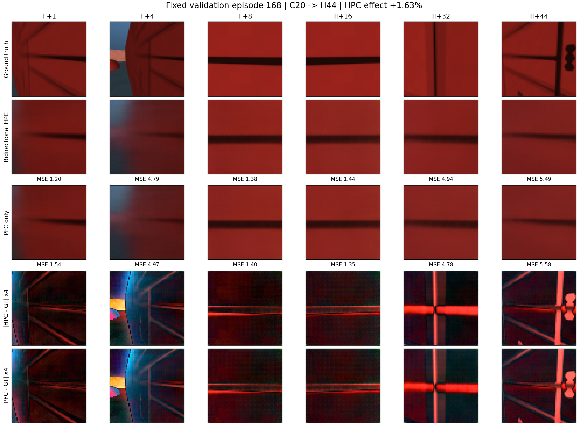
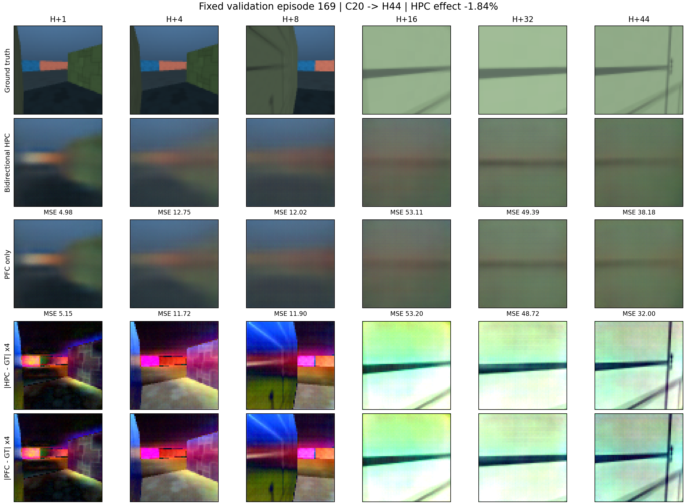
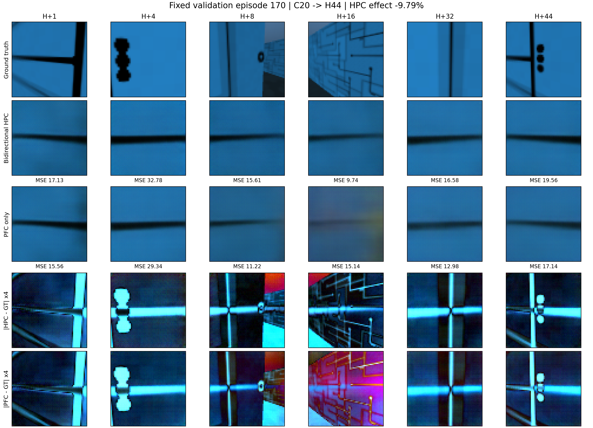

Pixel MSE ×1000，视觉编解码底噪
让预测图自己说话
先用固定 Val168–199 拆开视觉模糊来自哪里，再用连续 episode 168–170 展示真实图像。上半部分比较 GT、Autoencoder 重建、teacher-forced 一步预测与严格 free rollout；下半部分保留双向 HPC 与 PFC-only 的因果消融。
真实第一人称 RGB
H+1 / 4 / 8 / 16 / 32 / 44
无位置、朝向、房间 ID
future truth read/write = 0
固定连续样本
当前视觉结论：
模糊的最大增量发生在闭环 rollout。AE 重建 MSE×1000 为 1.61，teacher-forced 为 3.26，严格 C20→H44 free rollout 上升到 17.54。按这个 MSE 阶梯计算，约 81.4% 的最终误差增长发生在 teacher-forced 到 free rollout 之间。
全模型微调门控：
独立 Val200–215 上，旧 checkpoint 的 H44 MSE×1000 为 25.41；全模型 update 40 为 25.71（+1.18%），update 50 为 26.23（+3.19%）。一步预测只有不足 0.5% 的改善，无法抵消闭环退化，因此 pilot 不晋级，当前 checkpoint 保持不变。
Latent-manifold 因果门：
独立 Val216–231 显示 rollout latent 的 decode→encode cycle MSE 为 0.01744，真实 latent 仅 0.00273；但把投影结果硬喂回下一步会使 pixel MSE 从 12.59 恶化到 16.30（-29.5%）。因此 off-manifold 漂移存在，但 hard projection 被否决。
能读取此前真实帧，不能读取当前目标
未来真值 read/write 均为 0
Ground truth环境真实未来画面
AE reconstruction读取当前 GT，只测 encoder/decoder 上限，不是预测
Teacher-forced每一步只使用此前真实帧，测一步动力学
Strict free rolloutC20 后只输入 action，模型预测喂回下一步
Val32 总体：误差和高频能量
rollout MSE ×1000 = 17.54

Latent-manifold：存在漂移，硬投影失败
projected feedback -29.5%

Episode 168：四层模糊来源
固定连续样本 1/3

Episode 169：四层模糊来源
固定连续样本 2/3

Episode 170：四层模糊来源
固定连续样本 3/3

附录：双向 HPC 与 PFC-only
Val168–170 未稳定受益
Ground truth环境真实未来画面
Bidirectional HPCTransformer/PFC + sensory↔grid fast weights
PFC only同 checkpoint，仅把 HPC retrieval contribution 置零
|HPC-GT| ×4HPC 预测绝对误差热图，不是预测图
|PFC-GT| ×4PFC 预测绝对误差热图，不是预测图
Episode 168：HPC 小幅正收益
HPC effect +1.63%

Episode 169：HPC 接近持平
HPC effect -1.84%

Episode 170：HPC 明确负收益
HPC effect -9.79%
